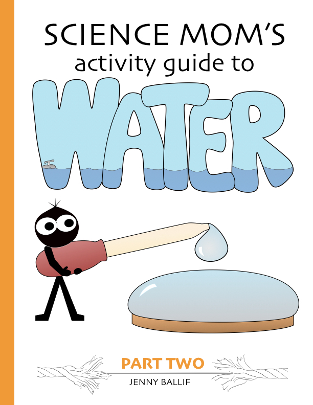

Each year I teach hundreds of science lessons as a volunteer in public school classrooms. I hope you’ll join me and inspire the next generation to have a passion for science. Your sponsorship is a valuable way to promote STEM education and literacy, and has a tangible impact to thousands of elementary age students here in Nevada.
How it Started
In 2013 I volunteered to teach a 15 minute science demonstration each week in my son’s first grade class. I’ve always loved science, and I am what most people would consider a “real” scientist, having a master’s degree in Plant Science with an emphasis in Molecular Biology. Before I began doing science demonstrations, the kids in that first grade class knew me as “Andrew’s Mom.” When I started bringing in science each week, the kids began to call me “Science Mom.” The name stuck and my job grew. Within a year I was visiting 10 classrooms a week, and now I have a YouTube channel (called Science Mom) and visit schools all over the Las Vegas valley.
The Books
 Science Mom Activity Guides have comics, coloring pages, and engaging explanations of basic principles of chemistry and physics. Ideal for students age 7 to 12, the books are a fantastic tie-in to several of the Science Mom in-class presentations. By themselves, the books are an engaging and positive STEM resource, but when paired with a Science Mom visit? Even better.
Science Mom Activity Guides have comics, coloring pages, and engaging explanations of basic principles of chemistry and physics. Ideal for students age 7 to 12, the books are a fantastic tie-in to several of the Science Mom in-class presentations. By themselves, the books are an engaging and positive STEM resource, but when paired with a Science Mom visit? Even better.
How to Sponsor STEM with Science Mom
Use the button below to make a purchase of books through PayPal to be donated when I visit a classroom. Suggested sponsorship options include:- Give a 30 minute science lesson and science activity book to 1 student - $5
- Give a 30 minute science lesson and books to 5 students - $25
- Give a 30 minute science lesson and books to an entire classroom (33 students) - $165
- Give books and a full day of science instruction to an entire school! (700 students) - $3,500
What your Sponsorship Brings to the Community
- An engaging 30 minute Science Mom lesson, taught in a CCSD classroom.
- Each child in the class gets to take home their own copy of a science activity book after the visit, which greatly deepens the learning experience and makes a lot of kids incredibly happy.
- Financial support of Science Mom, which means more educational YouTube videos, worksheets and handouts, and more books.